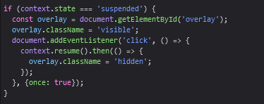
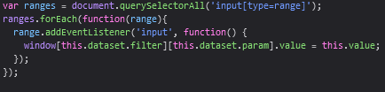

We have taken inspiration from two pieces of work, the first is an example of how the web audio API biQuadFilter can work by Boris Smus. There is one specific piece of code we have used from Smus' work that allows for a user gesture to initiate the audio in chrome, shown below:

Click here to go to Boris Smus' example
The second piece of work is a parametric EQ developed by Greg Hovanesyan and displayed on CodePen. There is a piece of code we have used from his example that allows the sliders to work correctly, this is pictured below:
